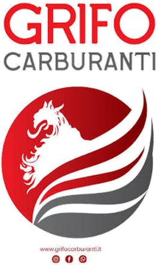

[Titolo della notizia]
Breve sommario della notizia o del resoconto di partita.
Marina Calcio: la squadra del nostro quartiere. Calendario, risultati, classifica e notizie della stagione, in un posto solo.
Domenica 20 settembre 2026, Seconda Categoria girone M.
Risultati della 2ª giornata in arrivo.
Seconda Categoria, girone M, stagione 2026/27. Dal calendario ufficiale LND; i ritorni sono a campi invertiti. Gli orari possono cambiare nei comunicati.
| G | Data | Ora | Partita | |
|---|---|---|---|---|
| 1 | 20/09 | 15:30 | Cinigiano – Marina | Trasferta |
| 2 | 27/09 | 15:30 | Marina – Alta Maremma | Casa |
| 3 | 04/10 | 15:30 | Magliano Sant'Andrea – Marina | Trasferta |
| 4 | 11/10 | 15:30 | Marina – Sticciano | Casa |
| 5 | 18/10 | 15:30 | Capalbio – Marina | Trasferta |
| 6 | 25/10 | 14:30 | Marina – Intercomunale Santa Fiora | Casa |
| 7 | 01/11 | 14:30 | Paganico – Marina | Trasferta |
| 8 | 08/11 | 14:30 | Marina – Sorano | Casa |
| 9 | 15/11 | 14:30 | Montieri – Marina | Trasferta |
| 10 | 22/11 | 14:30 | Amiata – Marina | Trasferta |
| 11 | 29/11 | 14:30 | Marina – Manciano Marsiliana | Casa |
| 12 | 06/12 | 14:30 | Fonteblanda – Marina | Trasferta |
| 13 | 13/12 | 14:30 | Marina – Castiglionese | Casa |
| 14 | 20/12 | 14:30 | Ribolla – Marina | Trasferta |
| 15 | 03/01 | 14:30 | Marina – Campagnatico Arcille | Casa |
| 16 | 10/01 | 14:30 | Marina – Cinigiano | Casa |
| 17 | 17/01 | 15:00 | Alta Maremma – Marina | Trasferta |
| 18 | 24/01 | 15:00 | Marina – Magliano Sant'Andrea | Casa |
| 19 | 31/01 | 15:00 | Sticciano – Marina | Trasferta |
| 20 | 07/02 | 15:00 | Marina – Capalbio | Casa |
| 21 | 14/02 | 15:00 | Intercomunale Santa Fiora – Marina | Trasferta |
| 22 | 21/02 | 15:00 | Marina – Paganico | Casa |
| 23 | 28/02 | 15:00 | Sorano – Marina | Trasferta |
| 24 | 07/03 | 15:00 | Marina – Montieri | Casa |
| 25 | 14/03 | 15:00 | Marina – Amiata | Casa |
| 26 | 04/04 | 15:30 | Manciano Marsiliana – Marina | Trasferta |
| 27 | 11/04 | 15:30 | Marina – Fonteblanda | Casa |
| 28 | 18/04 | 16:00 | Castiglionese – Marina | Trasferta |
| 29 | 25/04 | 16:00 | Marina – Ribolla | Casa |
| 30 | 02/05 | 16:00 | Campagnatico Arcille – Marina | Trasferta |
I risultati si aggiornano dopo ogni giornata.
Dopo la 1ª giornata.
| Pos | Squadra | Pt | G | V | N | P |
|---|---|---|---|---|---|---|
| 1 | Magliano Sant'Andrea | 3 | 1 | 1 | 0 | 0 |
| 2 | Aquile Sticciano | 3 | 1 | 1 | 0 | 0 |
| 3 | Campagnatico Arcille | 3 | 1 | 1 | 0 | 0 |
| 4 | Amiata | 3 | 1 | 1 | 0 | 0 |
| 5 | Alta Maremma | 1 | 1 | 0 | 1 | 0 |
| 6 | Cinigiano | 1 | 1 | 0 | 1 | 0 |
| 7 | Fonteblanda | 1 | 1 | 0 | 1 | 0 |
| 8 | Manciano Marsiliana | 1 | 1 | 0 | 1 | 0 |
| 9 | Marina | 1 | 1 | 0 | 1 | 0 |
| 10 | Sorano | 1 | 1 | 0 | 1 | 0 |
| 11 | Capalbio | 1 | 1 | 0 | 1 | 0 |
| 12 | Intercomunale Santa Fiora | 1 | 1 | 0 | 1 | 0 |
| 13 | Castiglionese | 0 | 1 | 0 | 0 | 1 |
| 14 | Ribolla | 0 | 1 | 0 | 0 | 1 |
| 15 | Paganico | 0 | 1 | 0 | 0 | 1 |
| 16 | Montieri | 0 | 1 | 0 | 0 | 1 |
Breve sommario della notizia o del resoconto di partita.
Breve sommario della notizia o del resoconto di partita.
Breve sommario della notizia o del resoconto di partita.
Marina Calcio nasce nel 1952 con un'idea semplice: far crescere ragazzi e tifosi attorno al pallone. Qui raccontiamo la nostra storia, i colori, i sostenitori e chi ci accompagna ogni domenica.
